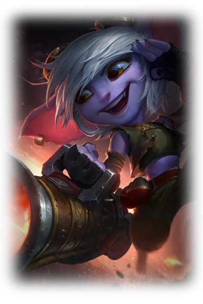

Os yordles são seres mágicos misteriosos que habitam os lugares mais estranhos possíveis,
isso quando não estão no seu próprio plano espiritual e atemporal, conhecido principalmente como Bandópolis,
mas existem outros nomes.
Chegam a aproximadamente 80cm de altura, algumas raras exceções chegam a aproximadamente 1 metro de altura.
Os machos da espécie possuem traços mais mamíferos, com uma aparência animalesca, pelos por todo o
corpo e focinho comprido.
As fêmeas da espécie possuem traços mais humanos, com uma aparência mais delicada, mas ainda mantém
a pele em tons que variam do azul ao violeta e as grandes orelhas.
Os Yordles apresentam apenas 4 dedos em cada mão, e nos pés variam de 2 à 4 dedos. São, normalmente, gentis e fofos,
atraindo a atenção de todos ao seu redor.
Muitos Yordles vivem própriamente em sua cidade, Bandópolis, porém muitos optam por
outras regiões, até mesmo em Demácia, onde a magia é repudiada. Os Yordles que optarem por
Demácia não deverão utilizar magia, apenas armamento e instrumentos físicos e aceitáveis no local.
Bandópolis
Há muita controvérsia sobre onde exatamente fica o lar dos Yordles, embora vários mortais afirmem ter
atravessado portais invisíveis para uma terra de estranho encantamento além do reino material.
Falam de um lugar com magia ilimitada, onde os incautos, atraídos por uma infinidade de elementos
fantásticos, podem acabar perdidos em um sonho sem volta.
Em Bandópolis, dizem que todas as sensações são amplificadas para os não Yordles, as cores são mais vívidas,
a comida e a bebida embriagam os sentidos por anos e, uma vez provadas, jamais podem ser esquecidas.
A luz do sol é eternamente dourada, as águas são completamente cristalinas e toda colheita
é extremamente frutífera.
Talvez alguns desses relatos sejam verdadeiros, mas talvez nenhum seja, pois não há duas pessoas
neste mundo que concordem sobre o que realmente viram.
Só uma coisa é certa: Bandópolis e seus habitantes carregam um poder atemporal.
Isso deve explicar por que muitos mortais que encontram seu caminho de volta parecem ter envelhecido
bruscamente, embora a maioria sequer retorne.

Magia/Armamento
Yordles são uma espécie que contém um nivel extremamente alto de magia em sua natureza,
de todo o universo de League of Legends, são a espécie que mais contém magia.
Nem sempre os Yordles optam por apenas utilizar magia tradicional em seus armamentos, muitos
utilizam de ferramentas de alta ou baixa tecnologia, geralmente forjado pelos mesmos, e, alguns,
até mesmo por meio de magia/com magia contida.
Seus armamentos não-necessariamente mágicos são compostos de canhões, mechas, machados e outras
armas até com semelhanças da era medieval.
A maioria dos Yordles, que moram e ocupam lugares diferentes de sua dimensão, são muito mal vistos,
principalmente pelo reino de Demácia que em sua maioria, repudia magia e seres mágicos como Yordles.
Sua força mágica é extremamente forte, porém sua altura e aparência geralmente "infantil" ou amigávelvel,
acaba fazendo alguns inimigos desavisados os subestimarem, as vezes acabando em morte, pois, apesar de sua
aparencia, alguns Yordles tem passados péssimos e indoles piores ainda.